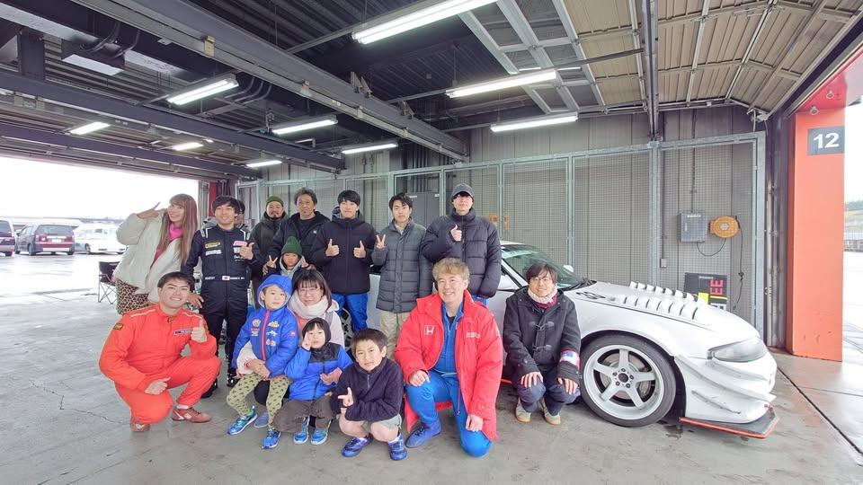
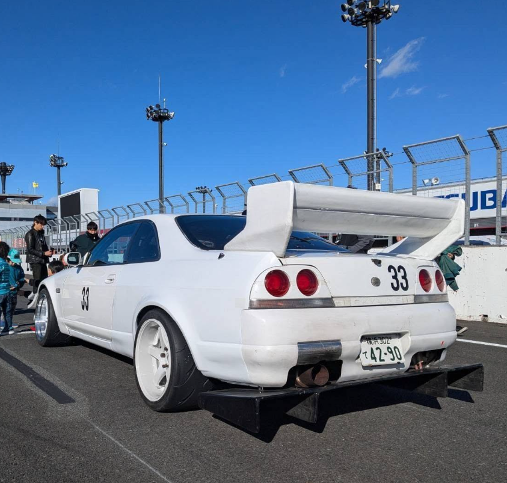
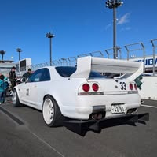

OMEGA CUP OPTION2 耐久 Rd.3・4hエビス西／No.4 R32
順位総合25位
クラスフレッシュマン19位
周回145周

Backsword Racing（バックソード・レーシング／裏剣）は、スカイラインでアイドラーズ耐久レースなどに参戦するレーシングチームです。
もてぎでのレース活動と、クルマづくりの工夫を発信しています。仲間と積み重ねた経験を、次の挑戦へつなげていきます。
日産スカイライン
通称「裏剣スカイライン」

大きなリアウイングと、白いボディに刻まれた「33」。サーキットで走り続ける裏剣スカイラインの一枚です。
2004年のエビス西から2026年のもてぎまで。チーム提供の参戦記録を年順に掲載しています。
エビス西 16大会
もてぎ 29大会
参戦記録のある大会数です。参戦記録の件数で、完走数ではありません。
2009年エビスのRd.2とFINALは、いずれも総合優勝・Cクラス優勝。2007〜2009年のエビス9大会では、総合3位以内が6回（優勝2回・2位2回・3位2回）です。2024年もてぎ春は総合4位・E2クラス優勝、同年のE2年間シリーズは1位を記録しています。
2022〜2025年、4年連続で年間トップ3。2024年はE2クラスのシリーズチャンピオンです。
| 年度 | 部門 | 年間順位 | ポイント内訳 | 合計 | 出典 |
|---|---|---|---|---|---|
| 2022 | E4 | 2位 | 春52 · 夏43 · 冬52 · 皆勤賞10 | 157点 | 公式PDF ↗ |
| 2023 | E2 | 2位 | 春8 · 夏1 · 冬3 · 皆勤賞5 | 17点 | 公式PDF ↗ |
| 2024 | E2 | 1位シリーズチャンピオン | 春10 · 夏3 · 冬8 · 皆勤賞10 | 31点 | 公式PDF ↗ |
| 2025 | E2 | 3位 | 春5 · 夏2 · 冬2 · 皆勤賞10 | 19点 | 公式PDF ↗ |
| 2026 | E4 | 3位春終了時点・暫定 | 春6 · 夏— · 冬— · 皆勤賞— | 6点 | 公式PDF ↗ |
2026年は公式ポイント表の春終了時点（2026年6月3日更新）の順位です。夏の大会を含む年間順位ではありません。皆勤賞（公式表のPA）は全戦参加による加算点です。点数は各年度の公式ポイント表に基づきます。年度により配点が異なるため、合計点は単純比較できません。年間表彰は下記の参戦45大会に加算していません。
耐久45大会の年表とは別に、筑波でのスプリント戦績も確認されています。
筑波サーキット／GT＆ハチロク 決勝。「裏剣スカイライン」名義でGT-Sクラス4位、総合15位、11周。
筑波サーキットの結果表を見る
レースの報告や車両の様子は、Backsword RacingのFacebookページで発信しています。走る日も、整備する日も。活動の続きをご覧ください。
Facebookで活動を見る